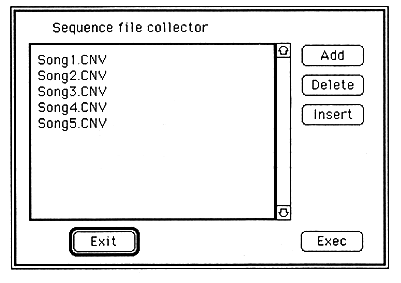
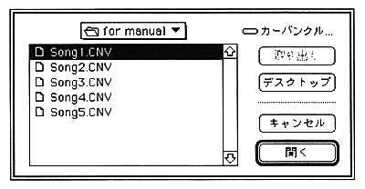

What is displayed here is a list of compressed file names converted by Standard MIDI File Convert and is called a collect list. At first, nothing is displayed, and add or insert with Insert or Insert.
If you read the collect list with Collect List Open, you don't have to register with Add or Insert every time.
Add
When you select Add, the following dialog box opens.

Add the compressed file name to the collect list here. When you select the compressed file name you want to add, the compressed file name is added to the end of the collect list.
Delete
Select a compressed file name from the collect list and click Delete to delete the compressed file name from the collect list.